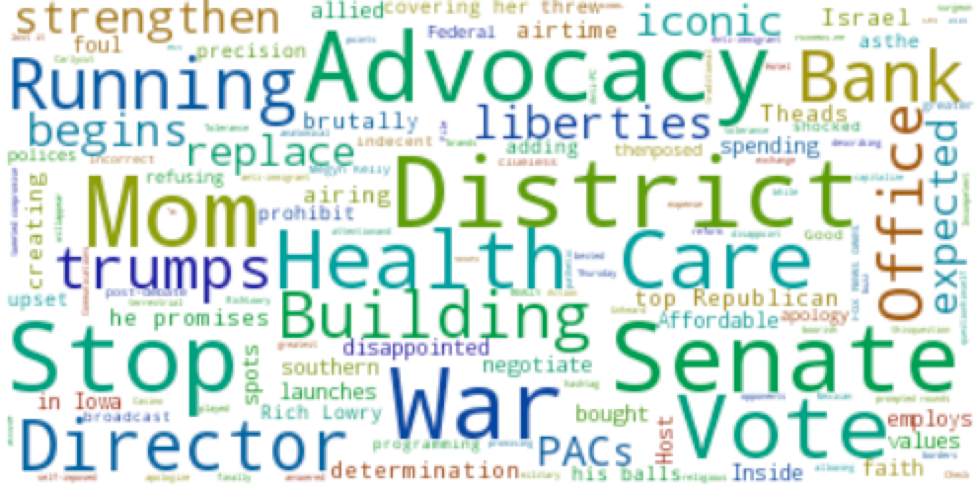
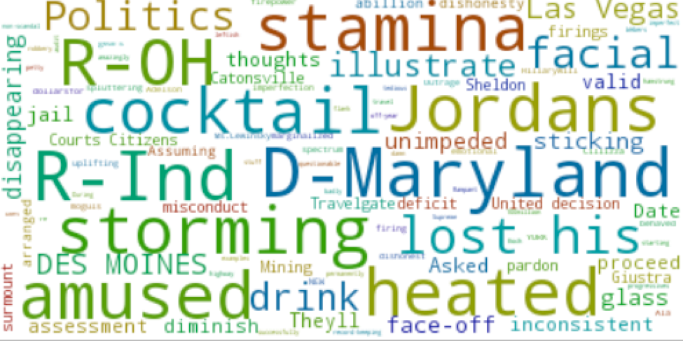
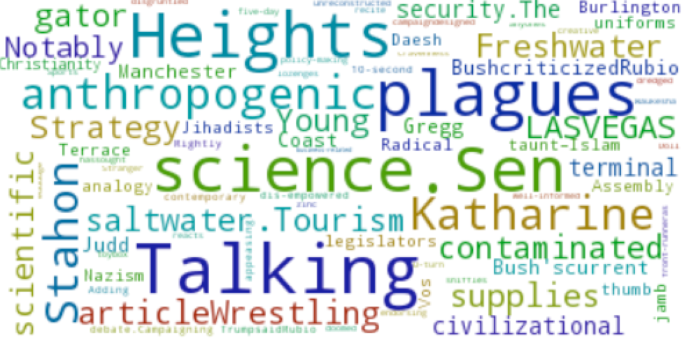

Dr. Ben Carson is mainly discrebed as Michigander, which points Dr. Ben Carson as a man grew up in Michigan. Many location words, medical words and words for shaping old man are used, which shapes him as a retired surgeon. Meanwhile, words like "avoidance", "dependency" and "Guns" point his right wing position.

Donald Trump
Top frequent words is about media, he has attended rather than his controversial comments, like attacking illegal immigration and president Obama. Top noun words related to his Social Status and Positions, which seems that his identity and controverisal life style is a interesting problem for media to describe him.

Hillary Clinton
Top Frequent Words about Benghazi Inquiry. Some words also linked to O‘Malley for attending presidential campaign. Most description words related to her are positive, and adjective described her strong and hard style when dealing with house and senate issues as former Secretary of State.

Marco Rubio
Sen. Marco Rubio is labeled as a anti-terrorism right wing politacian by mentioned of fighting against words such as "Nazism", "Judd", "taunt-islam" and so on. The appearance of the words"anthropogenic","science .Sen" and "scientific" point at Sen. Marco Rubio's rejection on science in climate issue.The words "plagues" comes from his statement on immigration issue as "better immigration rhetoric doesn't compare the issue to a plague of locusts"